Предотвращение пересечений между пользовательскими аккаунтами
Совместный доступ к файлам
Цели и задачи
Закрепление практических навыков работы в консоли с атрибутами
файлов
Закрепление теоретических основ дискреционного разграничения доступа
в современных системах с открытым кодом на базе ОС Linux
Материалы и методы
Веб-сервис GitHub для работы с репозиториями
Программа для виртуализации ОС VirtualBox
Процессор pandoc для входного формата Markdown
Результирующие форматы
pdf
docx
Автоматизация процесса создания: Makefile
Выполнение лабораторной работы
В установленной операционной системе создал учётную запись
пользователя guest (использую учётную запись администратора):
useradd guest (рис. [-@fig:001]).
Ну как видно она уже создана на 2-ой лаб.
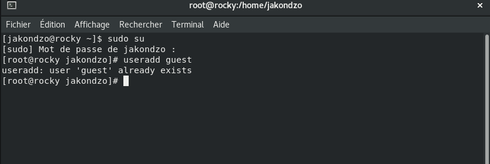
Создание нового пользователя
Задал пароль для пользователя guest (использую учётную запись
администратора) на 2-ой лаб: -passwd guest- (рис. [-@fig:002]).
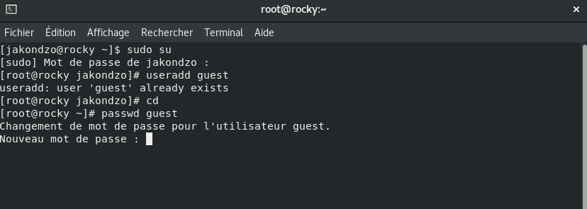
Введение пароля
Аналогично создал второго пользователя guest2 (рис. [-@fig:003]).
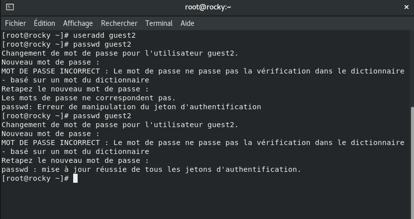
Создание пользователя guest2
Добавил пользователя guest2 в группу
guest:
gpasswd -a guest2 guest (рис. [-@fig:004]).
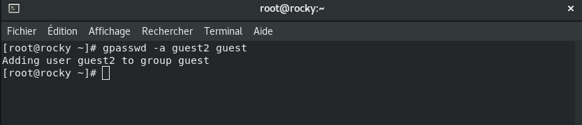
Добавление пользователя guest2 в группу
guest
Осуществил вход в систему от двух пользователей на двух разных
консолях: guest на первой консоли и guest2 на второй консоли (рис. [-@fig:005]).
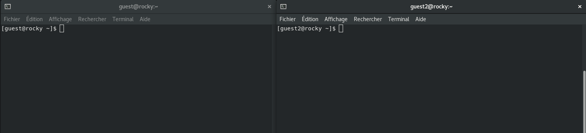
Вход двух пользователя
Для обоих пользователей командой pwd определил директорию, в которой
вы находитесь. Сравнил её с приглашениями командной строки (рис. [-@fig:006]).
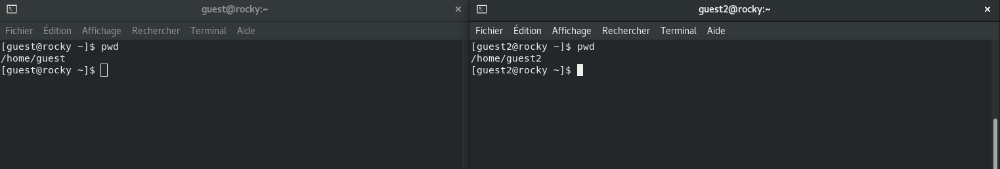
Определение директории
Уточнил имя вашего пользователя, его группу, кто входит в неё и к
каким группам принадлежит он сам. Определил командами groups guest и
groups guest2, в какие группы входят пользователи guest и guest2.
Сравнил вывод команды groups с выводом команд id -Gn и id -G
(рис. [-@fig:007]).
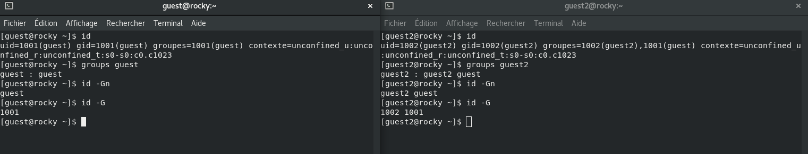
Уточнение имени пользователя
Сравнил полученную информацию с содержимым файла /etc/group.
Просмотрил файл командой cat /etc/group (рис. [-@fig:008]) и (рис. [-@fig:009]).
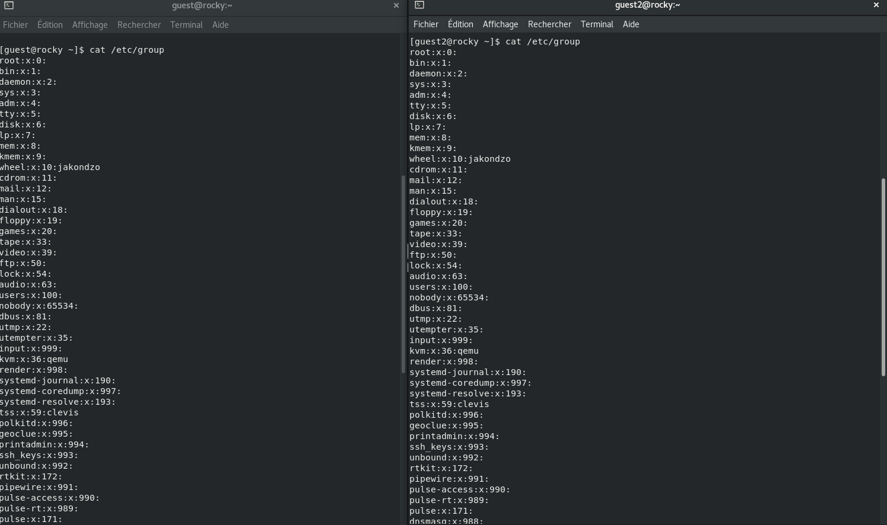
Получение информации
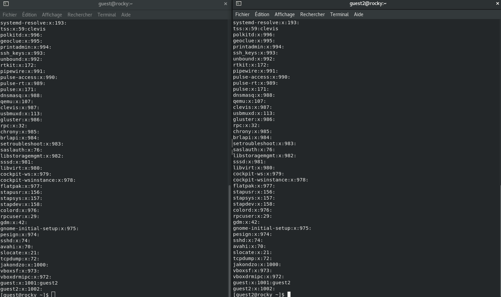
Получение информации
От имени пользователя guest2 выполните регистрацию пользователя
guest2 в группе guest командой newgrp guest
(рис. [-@fig:010]).
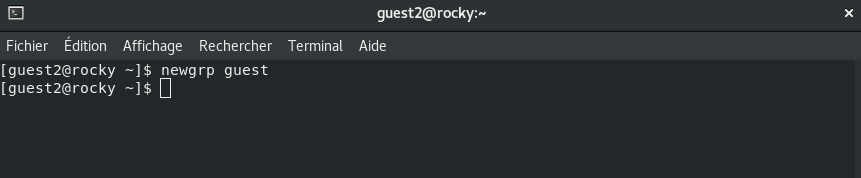
Регистрация пользователя guest2 в группе
guest
От имени пользователя guest изменил права директории /home/guest,
разрешив все действия для пользователей группы:
chmod g+rwx /home/guest (рис. [-@fig:011]).
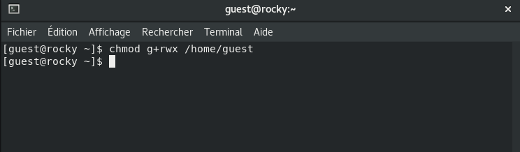
Права доступа
От имени пользователя guest снимил с директории
/home/guest/dir1 все атрибуты командой chmod 000
dirl (рис. [-@fig:012]) и (рис. [-@fig:013]).
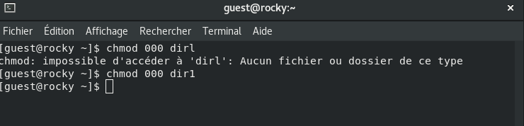
Права доступа
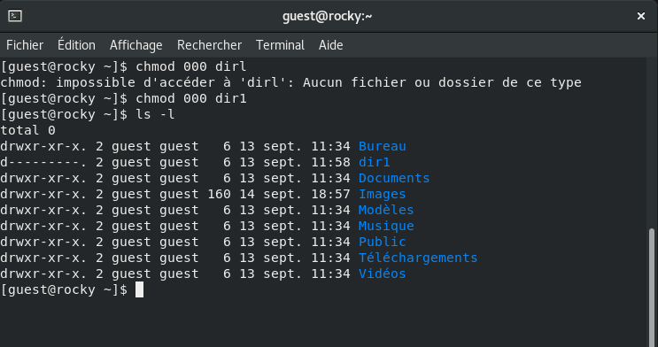
Права доступа
Исходя из полученной информации, была заполнена таблица.
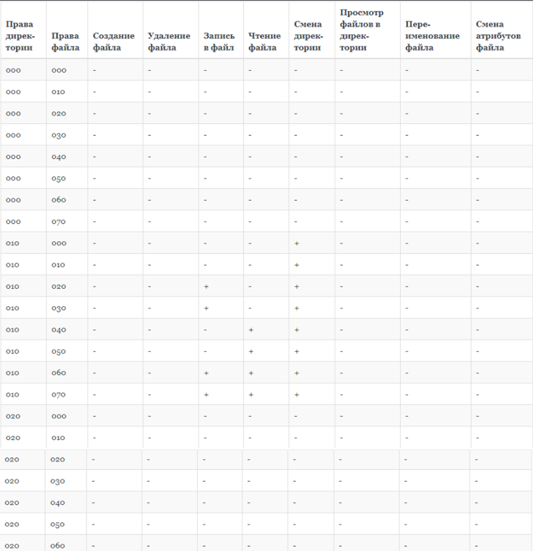
таблица_1
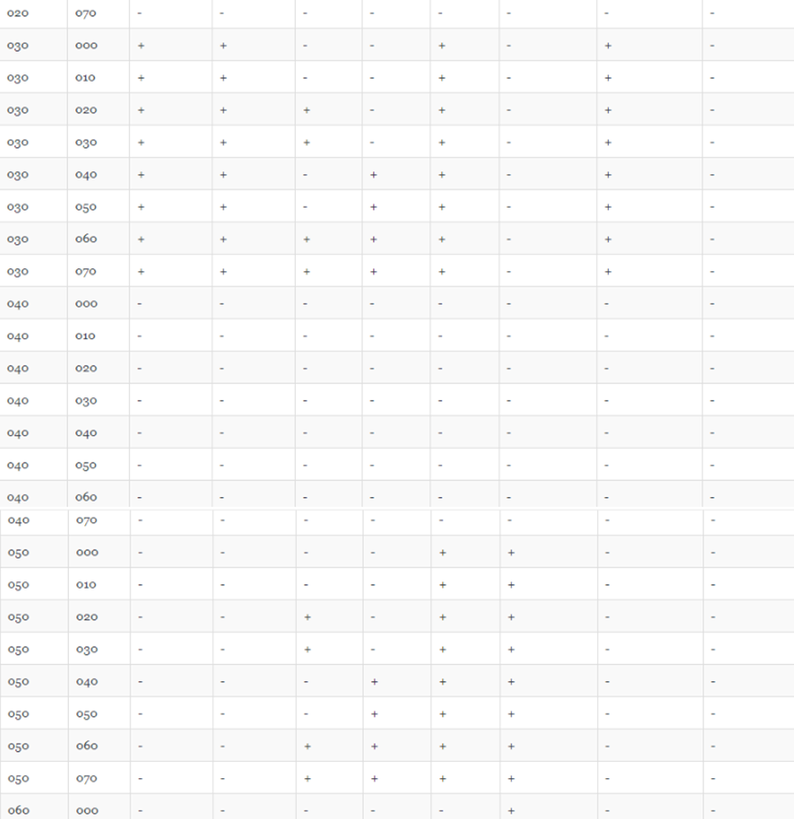
таблица_2
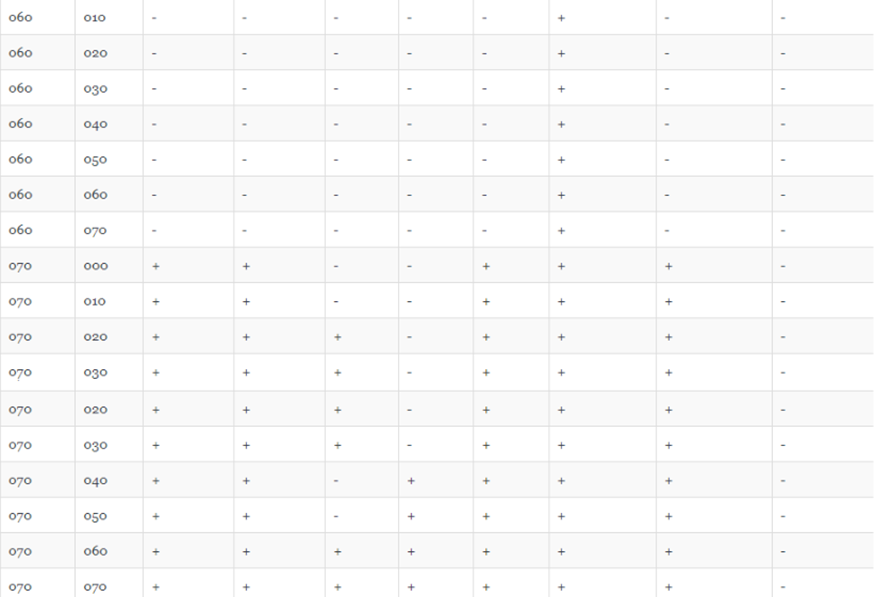
таблица_3
Минимальные права для совершения операций от имени пользователей
входящих в группу.
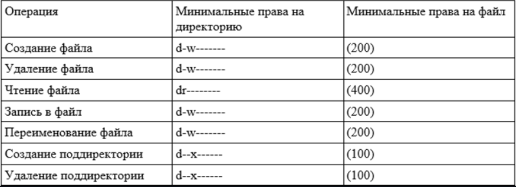
Минимальные права
Результаты
Результаты работы
Отточены навыки работы с атрибутами файлов
Отточены знания об ограничении доступа в системах на базе Linux
Выявлены минимальные права на директорию и на файл для разных
операций